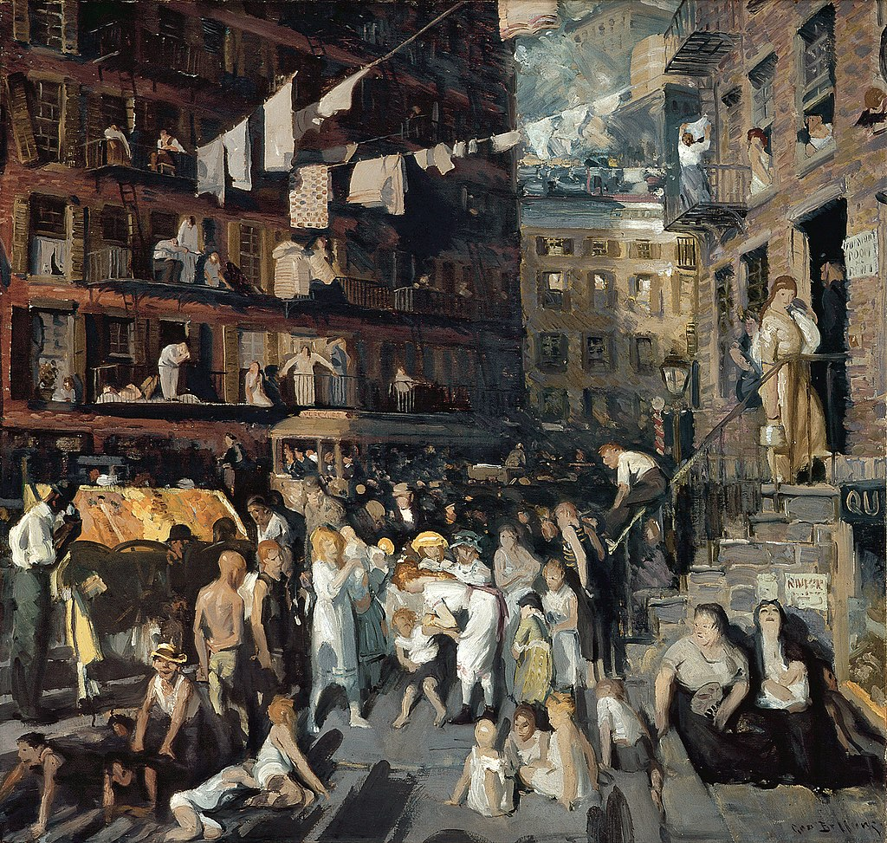

<head>
<meta charset="UTF-8" />
<meta name="keywords" content="drawing, painting" />
<meta name="description" content="drawings by Sunjy" />
<title>Sunjy</title>
<link rel="shortcut icon" type="image/x-icon" href="../../mImages/mCommon/favicon.ico" media="screen" />
<link rel="stylesheet" type="text/css" href="../../mCsses/mCommon/mCssA.css" />
<link rel="stylesheet" type="text/css" href="../../mCsses/mCommon/mCssB.css" />
<link rel="stylesheet" type="text/css" href="../../mCsses/mCommon/mCssC.css" />
<link rel="stylesheet" type="text/css" href="../../mCsses/mCommon/mCssD.css" />
<link rel="stylesheet" type="text/css" href="../../mCsses/mContent/mCssA.css" />
<link rel="stylesheet" type="text/css" href="../../mCsses/mContent/mCssB.css" />
<link rel="stylesheet" type="text/css" href="../../mCsses/mContent/mCssC.css" />
<link rel="stylesheet" type="text/css" href="../../mCsses/mContent/mCssD.css" />
</head>
<script type="text/javascript" src="../../mScripts/mContent/mContentAA.js" /></script>
<script type="text/javascript" src="../../mScripts/mContent/mContentAB.js" /></script>
<script type="text/javascript" src="../../mScripts/mContent/mContentAC.js" /></script>
<script type="text/javascript" src="../../mScripts/mContent/mContentAD.js" /></script>
<script type="text/javascript"></script> 
<script type="text/javascript">
document.write('<div class="mImgAbsolute"></div>');
/*
document.write('<p class="mFontSizeBColor" />From a white paper...</p>');
document.write('<table class="center"><tr><td>');
document.write('');
document.write('</td></tr></table>');
*/
</script>


<script type="text/javascript">
document.write('<p class="mFontSizeBColor" />Cliff Dwellers</p>');
document.write('<p class="mFontSizeSColor" />“Cliff Dwellers” by George Bellows depicts the density and crowds on New York City’s Lower East Side, on a hot summer’s day. The painting, made in 1913, highlights the city’s explosive population growth.<br><br>The city grew from one-and-a-half to five million in the forty years proceedings this depiction, primarily due to immigration. In this painting, people spill out of tenement buildings onto the streets, stoops, and fire escapes.<br><br>Laundry flaps overhead and a street vendor hawks his goods from his pushcart amid all the traffic. In the background, a trolley car heads toward Vesey Street.<br><br>Many of the new arrivals, Italian, Jewish, Irish, and Chinese, crowded into tenement houses on the Lower East Side.<br><br>Among them were thousands of Eastern European Jews, who found temporary or permanent shelter along streets such as East Broadway, the setting for Cliff Dwellers.<br><br>Cliff Dwellers skillfully conveys the sense of congestion, overpopulation, and the impact of the city on its inhabitants.<br><br>The living quarters of many of the Cliff Dwellers were small, dense, and dark, which is illustrated in this composition.<br><br>The painting also shows how industrialization had impacted the working-class lifestyle at that time.<br></p>');
document.write('<table class="center" /><tr><td>');
document.write('<br>The city grew from one-and-a-half to five million in the forty years proceedings this depiction, primarily due to immigration. In this painting, people spill out of tenement buildings onto the streets, stoops, and fire escapes.<br><br>Laundry flaps overhead and a street vendor hawks his goods from his pushcart amid all the traffic. In the background, a trolley car heads toward Vesey Street.<br><br>Many of the new arrivals, Italian, Jewish, Irish, and Chinese, crowded into tenement houses on the Lower East Side.<br><br>Among them were thousands of Eastern European Jews, who found temporary or permanent shelter along streets such as East Broadway, the setting for Cliff Dwellers.<br><br>Cliff Dwellers skillfully conveys the sense of congestion, overpopulation, and the impact of the city on its inhabitants.<br><br>The living quarters of many of the Cliff Dwellers were small, dense, and dark, which is illustrated in this composition.<br><br>The painting also shows how industrialization had impacted the working-class lifestyle at that time.<br>" />');
document.write('</td></tr></table>');
</script>


